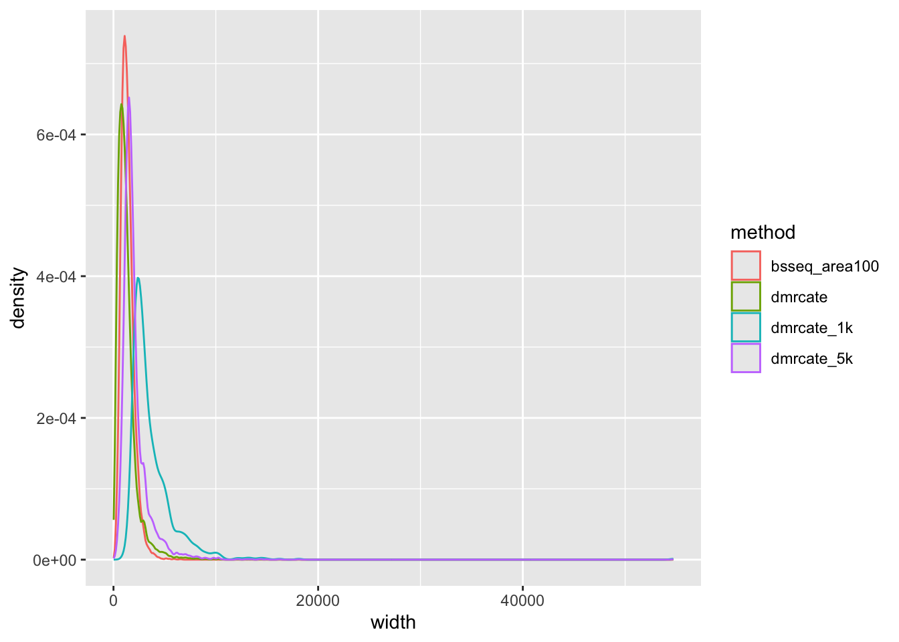
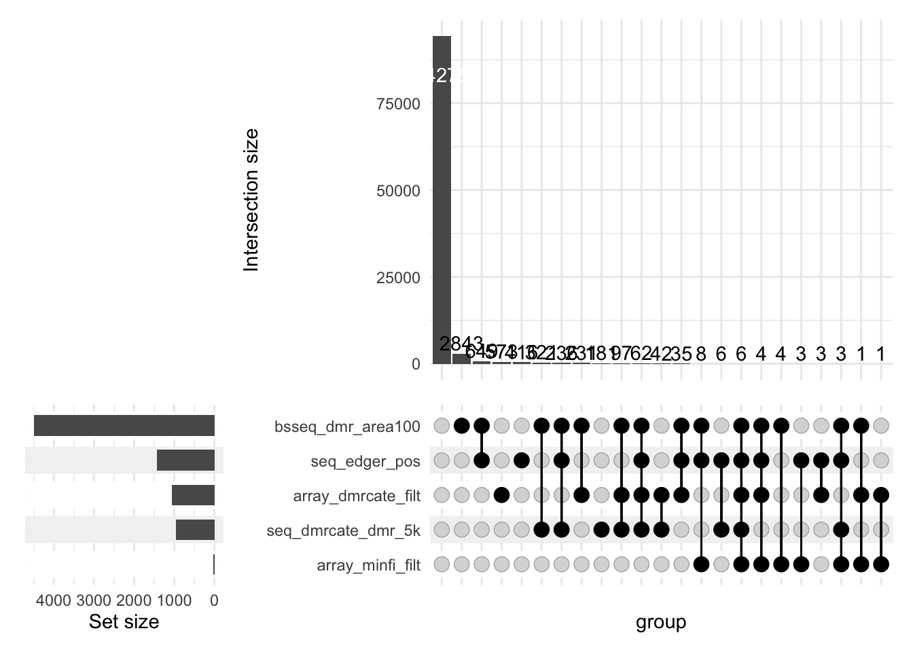
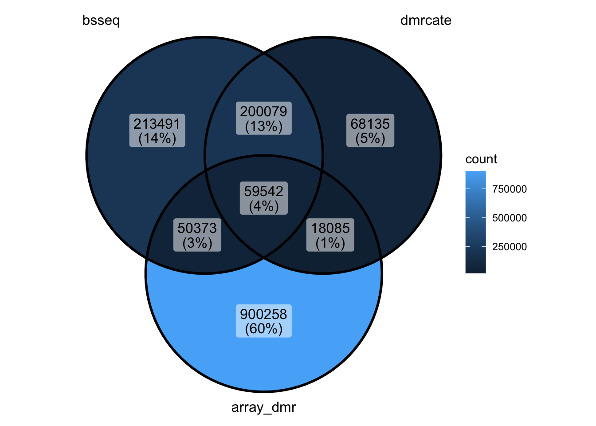
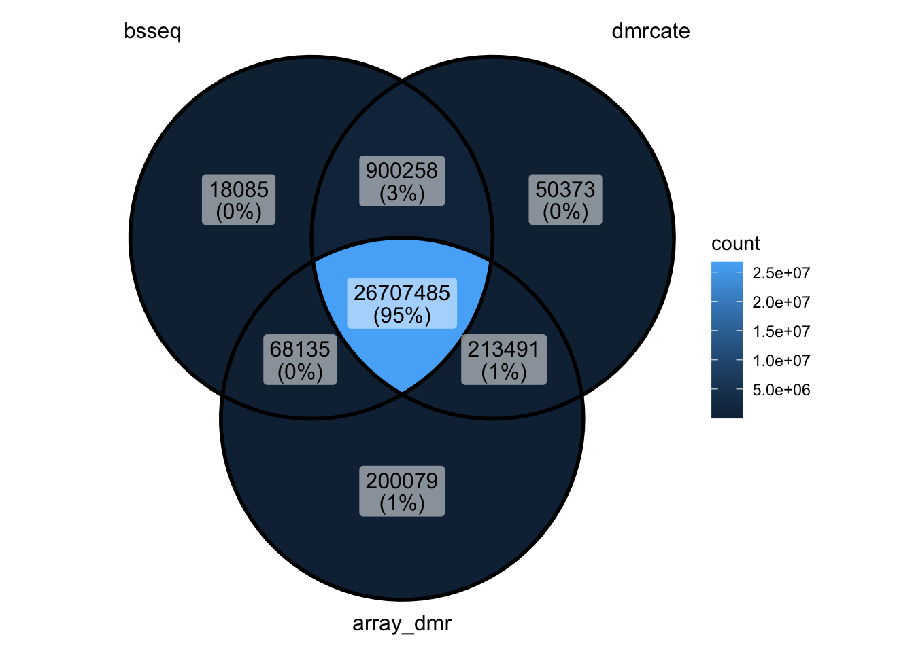
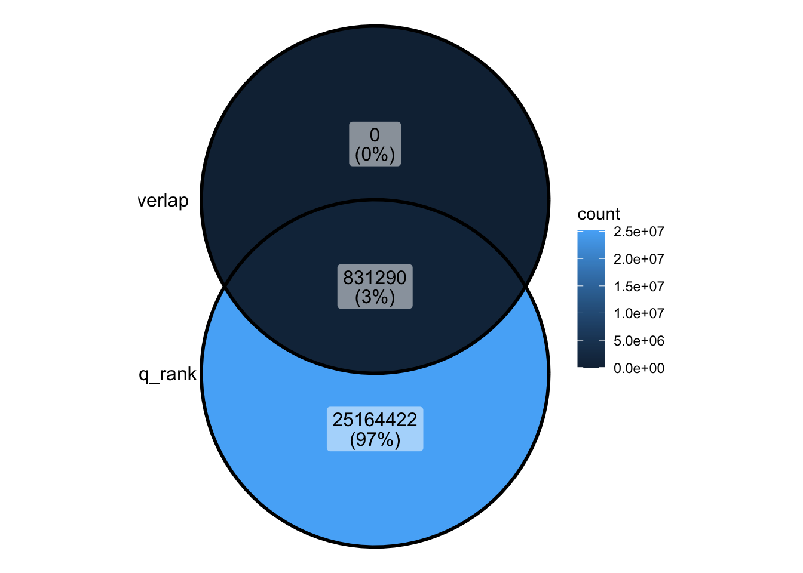
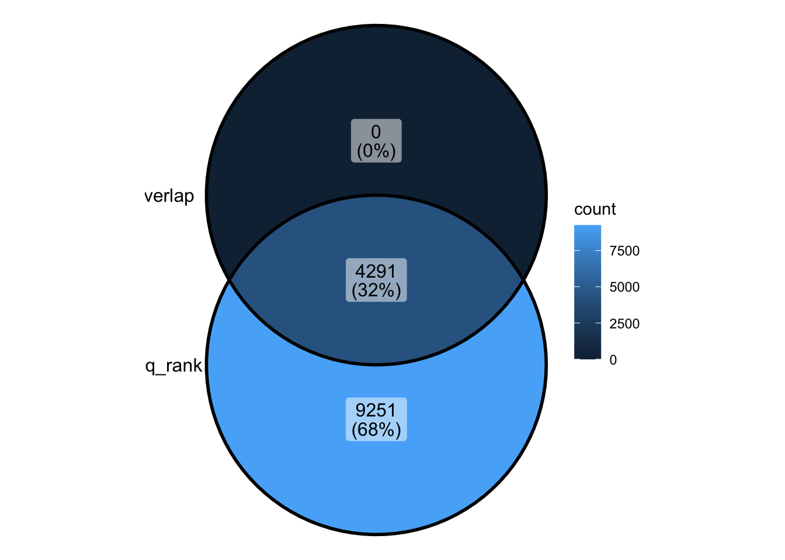

04_compareDM
Caitlin Page
2025-02-21
Last updated: 2025-04-29
Checks: 7 0
Knit directory: 2_ontology_bias/analysis/
This reproducible R Markdown analysis was created with workflowr (version 1.7.1). The Checks tab describes the reproducibility checks that were applied when the results were created. The Past versions tab lists the development history.
Great! Since the R Markdown file has been committed to the Git repository, you know the exact version of the code that produced these results.
Great job! The global environment was empty. Objects defined in the global environment can affect the analysis in your R Markdown file in unknown ways. For reproduciblity it’s best to always run the code in an empty environment.
The command set.seed(20240905) was run prior to running
the code in the R Markdown file. Setting a seed ensures that any results
that rely on randomness, e.g. subsampling or permutations, are
reproducible.
Great job! Recording the operating system, R version, and package versions is critical for reproducibility.
Nice! There were no cached chunks for this analysis, so you can be confident that you successfully produced the results during this run.
Great job! Using relative paths to the files within your workflowr project makes it easier to run your code on other machines.
Great! You are using Git for version control. Tracking code development and connecting the code version to the results is critical for reproducibility.
The results in this page were generated with repository version 3ec9448. See the Past versions tab to see a history of the changes made to the R Markdown and HTML files.
Note that you need to be careful to ensure that all relevant files for
the analysis have been committed to Git prior to generating the results
(you can use wflow_publish or
wflow_git_commit). workflowr only checks the R Markdown
file, but you know if there are other scripts or data files that it
depends on. Below is the status of the Git repository when the results
were generated:
Ignored files:
Ignored: .DS_Store
Ignored: .Rhistory
Ignored: .Rproj.user/
Ignored: analysis/.DS_Store
Ignored: analysis/input/
Ignored: analysis/mc_h1/
Ignored: analysis/myEnvironment.RData
Ignored: data/cell_line_wgbs/
Ignored: data/gene_sets/
Ignored: data/long_read/
Ignored: data/microarray/
Ignored: data/wgbs/
Ignored: data/wgbs_2/
Ignored: output/figures/
Ignored: renv/library/
Ignored: renv/staging/
Untracked files:
Untracked: analysis/clusterlog.txt
Untracked: code/ChatGPT_translate.html
Untracked: code/ChatGPT_translate_files/
Untracked: code/background.R
Unstaged changes:
Modified: .gitignore
Modified: 2_ontology_bias.Rproj
Modified: _workflowr.yml
Modified: analysis/00_datasets.Rmd
Modified: analysis/02_exploreBiasGenes.Rmd
Modified: analysis/03_genesToGST.Rmd
Modified: analysis/index.Rmd
Modified: renv.lock
Modified: renv/.gitignore
Modified: renv/activate.R
Modified: renv/settings.json
Note that any generated files, e.g. HTML, png, CSS, etc., are not included in this status report because it is ok for generated content to have uncommitted changes.
These are the previous versions of the repository in which changes were
made to the R Markdown (analysis/04_compareDM.Rmd) and HTML
(docs/04_compareDM.html) files. If you’ve configured a
remote Git repository (see ?wflow_git_remote), click on the
hyperlinks in the table below to view the files as they were in that
past version.
| File | Version | Author | Date | Message |
|---|---|---|---|---|
| Rmd | 3ec9448 | Caitlin Page | 2025-04-29 | wflow_publish("04_compareDM.Rmd") |
| html | 7434dee | Caitlin Page | 2025-04-29 | Build site. |
| Rmd | cdf5275 | Caitlin Page | 2025-04-29 | wflow_publish("04_compareDM.Rmd") |
| Rmd | 8b8e926 | Caitlin Page | 2025-03-31 | update |
| Rmd | 9214a36 | Caitlin Page | 2025-03-13 | compare methods |
| Rmd | e32b7e3 | Caitlin Page | 2025-02-24 | init commit |
Introduction
Comparison of differential methylation results.
Packages
library(plyranges)Loading required package: BiocGenerics
Attaching package: 'BiocGenerics'The following objects are masked from 'package:stats':
IQR, mad, sd, var, xtabsThe following objects are masked from 'package:base':
anyDuplicated, aperm, append, as.data.frame, basename, cbind,
colnames, dirname, do.call, duplicated, eval, evalq, Filter, Find,
get, grep, grepl, intersect, is.unsorted, lapply, Map, mapply,
match, mget, order, paste, pmax, pmax.int, pmin, pmin.int,
Position, rank, rbind, Reduce, rownames, sapply, setdiff, table,
tapply, union, unique, unsplit, which.max, which.minLoading required package: IRangesLoading required package: S4VectorsLoading required package: stats4
Attaching package: 'S4Vectors'The following object is masked from 'package:utils':
findMatchesThe following objects are masked from 'package:base':
expand.grid, I, unnameLoading required package: GenomicRangesLoading required package: GenomeInfoDb
Attaching package: 'plyranges'The following object is masked from 'package:IRanges':
sliceThe following object is masked from 'package:stats':
filterlibrary(dplyr)
Attaching package: 'dplyr'The following objects are masked from 'package:plyranges':
between, n, n_distinctThe following objects are masked from 'package:GenomicRanges':
intersect, setdiff, unionThe following object is masked from 'package:GenomeInfoDb':
intersectThe following objects are masked from 'package:IRanges':
collapse, desc, intersect, setdiff, slice, unionThe following objects are masked from 'package:S4Vectors':
first, intersect, rename, setdiff, setequal, unionThe following objects are masked from 'package:BiocGenerics':
combine, intersect, setdiff, unionThe following objects are masked from 'package:stats':
filter, lagThe following objects are masked from 'package:base':
intersect, setdiff, setequal, unionlibrary(ggplot2)
library(ggVennDiagram)
library(ComplexUpset)Pre-processed files
wgbs_counts <- readRDS("../output/wgbs_counts.rds")
#sequencing
dmrcate_seq_anno <- readRDS("../output/dmrcate_seq_anno.rds")
dmrcate_seq_anno <- dmrcate_seq_anno@ranges %>% data.frame() %>%
mutate(pos = paste0(seqnames, "-", start))
dmrcate_seq_anno <- dmrcate_seq_anno %>% .[order(.$ind.fdr),] %>% mutate(rank = 1:n())
dmrcate_seq_dmr <- readRDS("../output/dmrcate_seq_dmr.rds")
dmrcate_seq_dmr <- dmrcate_seq_dmr %>% data.frame()
bsseq_dmrs <- readRDS("../output/bsseq_dmrs.rds")
bsseq_res <- readRDS("../output/bsseq_res.rds")
seq_edge_res <- readRDS("../output/seq_edge_res.rds")
#array
DMPs <- readRDS("../output/array_dmps.rds")
DMPs$pos <- paste0(DMPs$seqnames, "-", DMPs$start)
dmrcate_array_dmr <- readRDS("../output/dmrcate_array_dmr.rds")
dmrcate_array_dmr <- dmrcate_array_dmr %>% data.frame()
dmrcate_array_anno <- readRDS("../output/dmrcate_array_anno.rds")
dmrcate_array_anno <- dmrcate_array_anno@ranges %>% data.frame() %>%
mutate(pos = paste0(seqnames, "-", start)) %>% .[order(.$ind.fdr),] %>% mutate(rank = 1:n())
#dmrcate_array_anno <- dmrcate_array_anno %>% mutate(cg_id = anno_array[match(.$pos, anno_array$position), "Name"])Filtering parameters
minfi
head(DMPs) seqnames start width AddressB logFC AveExpr t
cg15949485 chr2 99273454 1 -5.737982 -0.4955390 -72.04207
cg17092391 chr7 73515902 1 5.898663 -0.5920786 70.76621
cg11661493 chr17 74423978 1 6.428390 -0.5212259 70.70861
cg07021509 chr8 61892203 1 6.790302 -0.6455871 70.40347
cg01165928 chr7 102082517 1 6.220094 -0.2474618 70.02329
cg18664915 chr7 1043861 1 5.903508 -0.1854076 69.91840
P.Value adj.P.Val B rank pos
cg15949485 2.400819e-19 3.298931e-14 33.52771 1 chr2-99273454
cg17092391 3.078692e-19 3.298931e-14 33.34358 2 chr7-73515902
cg11661493 3.113780e-19 3.298931e-14 33.33514 3 chr17-74423978
cg07021509 3.306948e-19 3.298931e-14 33.29026 4 chr8-61892203
cg01165928 3.565771e-19 3.298931e-14 33.23389 5 chr7-102082517
cg18664915 3.640940e-19 3.298931e-14 33.21826 6 chr7-1043861nrow(DMPs)[1] 776665- recommended filtering parameter for GST is maximum of 10k CpGs.
- using more results in more noise - because you end up identifying every gene as significant.
dmrcate array
head(dmrcate_array_dmr) seqnames start end width strand no.cpgs min_smoothed_fdr
1 chr7 27194614 27214915 20302 * 122 0
2 chr6 33263120 33268842 5723 * 93 0
3 chr6 30652202 30659513 7312 * 92 0
4 chr6 31695027 31701808 6782 * 77 0
5 chr10 8091753 8103673 11921 * 76 0
6 chr6 31862674 31869553 6880 * 71 0
Stouffer HMFDR Fisher maxdiff meandiff
1 1.368969e-252 1.004780e-10 8.358899e-300 0.4867324 0.049689927
2 5.171285e-16 7.509885e-11 1.570294e-41 0.3729442 0.013052812
3 4.963010e-114 4.143546e-13 1.165282e-199 0.7071281 0.094208223
4 8.315485e-14 5.048319e-12 7.991628e-28 0.5149155 0.006641734
5 4.221798e-136 6.789293e-11 5.165912e-154 -0.6646075 -0.063021330
6 5.905523e-30 1.637112e-11 1.316075e-65 -0.6704265 -0.026350362
overlapping.genes
1 HOXA-AS3, RP1-170O19.21, HOXA10-AS, HOXA7, HOXA9, RP1-170O19.20, MIR196B, HOXA10
2 PFDN6, RGL2, TAPBP
3 PPP1R18, NRM
4 DDAH2, CLIC1
5 RP11-379F12.4, GATA3, GATA3-AS1, RP11-379F12.3
6 C2, EHMT2, ZBTB12dmrcate_array_dmr_filt <- dmrcate_array_dmr %>% filter(no.cpgs > 3, abs(meandiff) > 0.1)
c(array = nrow(dmrcate_array_dmr), filt = nrow(dmrcate_array_dmr_filt))array filt
34263 2786 Sum of CpGs across those DMRs
c(array = sum(dmrcate_array_dmr$no.cpgs), filt = sum(dmrcate_array_dmr$no.cpgs)) array filt
177623 177623 bsseq
head(bsseq_dmrs) position seqnames start end idxStart idxEnd cluster n
90156 chr7-158595973 chr7 158595973 158597702 11824761 11824875 2008166 115
97889 chr11-314783 chr11 314783 318111 15588281 15588431 287130 151
68822 chr2-8418248 chr2 8418248 8424108 2314827 2314938 918827 112
56322 chr19-1646759 chr19 1646759 1650002 23525162 23525269 889718 108
54340 chr17-75316243 chr17 75316243 75321648 22648912 22649108 823284 197
51278 chr16-88600393 chr16 88600393 88601461 21620676 21620832 779278 157
width invdensity areaStat maxStat meanDiff group1.mean group2.mean
90156 1730 15.043478 -2448.388 -2.608966 -0.7669851 0.1469680 0.9139531
97889 3329 22.046358 -2381.623 -3.101464 -0.6354995 0.0890310 0.7245305
68822 5861 52.330357 -2374.264 -4.032202 -0.6338283 0.2448161 0.8786444
56322 3244 30.037037 1998.382 24.989896 0.6892998 0.9072248 0.2179250
54340 5406 27.441624 1987.636 25.101076 0.3506880 0.7423341 0.3916461
51278 1069 6.808917 1985.715 16.149314 0.3906955 0.5600847 0.1693891
tstat.sd direction
90156 0.03370352 hypo
97889 0.02951290 hypo
68822 0.03179347 hypo
56322 0.03597023 hyper
54340 0.03016071 hyper
51278 0.02959988 hyperbsseq_dmrs_filt <- bsseq_dmrs %>% filter(abs(areaStat) > 100)
c(dmrs = nrow(bsseq_dmrs), filt = nrow(bsseq_dmrs_filt)) dmrs filt
69858 17713 Sum of CpGs across DMRs
c(dmrs = sum(bsseq_dmrs$n), filt = sum(bsseq_dmrs_filt$n)) dmrs filt
1004998 522432 dmrcate seq
head(dmrcate_seq_dmr) seqnames start end width strand no.cpgs min_smoothed_fdr
1 chr1 167434091 167488800 54710 * 715 0
2 chr11 113932115 113948338 16224 * 336 0
3 chr19 8627507 8641759 14253 * 316 0
4 chr12 10456885 10466669 9785 * 127 0
5 chr10 72355543 72364759 9217 * 198 0
6 chr17 45811354 45822029 10676 * 208 0
Stouffer HMFDR Fisher maxdiff meandiff
1 0.000000e+00 0.0002481331 0.000000e+00 -11.311593 -5.643222
2 0.000000e+00 0.0007797373 7.262418e-315 -9.825363 -4.674082
3 7.545644e-243 0.0005360353 1.003690e-278 -10.136485 -4.386791
4 3.058706e-290 0.0001100756 4.325037e-267 -10.604822 -7.088274
5 1.123502e-263 0.0002704979 4.449882e-261 -9.472313 -5.302931
6 3.710160e-216 0.0005478491 2.540144e-232 -9.936832 -4.962632
overlapping.genes
1 AKR1D1P1, CD247
2 ZBTB16
3 MYO1F
4 KLRD1
5 PRF1
6 TBX21c(dmrs = nrow(dmrcate_seq_dmr), `5k` = 5000, `1k` = 1000) dmrs 5k 1k
13542 5000 1000 c(dmrs = sum(dmrcate_seq_dmr$no.cpgs), `5k` = sum(dmrcate_seq_dmr[1:5000,"no.cpgs"]),
`1k` = sum(dmrcate_seq_dmr[1:1000,"no.cpgs"])) dmrs 5k 1k
344610 188976 71184 edgeR
head(seq_edge_res) logFC logCPM LR PValue FDR signif.05
chr2-102985195 -14.57712 -4.792479 129.4411 5.430423e-30 1.318902e-22 TRUE
chr8-60100608 -15.06021 -4.923078 127.5833 1.384675e-29 1.681499e-22 TRUE
chr22-18077698 14.74929 -5.060096 120.3964 5.180342e-28 2.369875e-21 TRUE
chr5-156608059 -14.72724 -5.081965 120.2161 5.673161e-28 2.369875e-21 TRUE
chr12-10432700 -14.70074 -5.075146 120.2159 5.673586e-28 2.369875e-21 TRUE
chr7-127645445 14.72284 -5.078940 120.1536 5.854606e-28 2.369875e-21 TRUEcompare dm methods
compare_dm <- wgbs_counts[,1:4]overlap_dm <- find_overlaps(as_granges(dmrcate_seq_dmr[1:5000,]), as_granges(compare_dm)) %>% data.frame()
compare_dm <- compare_dm %>% mutate(seq_dmrcate_dmr_5k = ifelse(pos %in% overlap_dm$pos, TRUE, FALSE))
overlap_dm <- find_overlaps(as_granges(bsseq_dmrs_filt), as_granges(compare_dm)) %>% data.frame()
compare_dm <- compare_dm %>% mutate(bsseq_dmr_area100 = ifelse(pos %in% overlap_dm$pos, TRUE, FALSE))
compare_dm <- compare_dm %>% mutate(seq_edger_pos = seq_edge_res[match(.$pos, rownames(seq_edge_res)), "signif.05"])
overlap_dm <- find_overlaps(as_granges(dmrcate_array_dmr_filt), as_granges(compare_dm)) %>% data.frame()
compare_dm <- compare_dm %>% mutate(array_dmrcate_filt = ifelse(pos %in% overlap_dm$pos, TRUE, FALSE),
array_minfi_filt = ifelse(pos %in% DMPs[1:10000,]$pos, TRUE, FALSE))upset(filter(compare_dm, seq_dmrcate_dmr_5k != FALSE| bsseq_dmr_area100 != FALSE| seq_edger_pos != FALSE| array_dmrcate_filt != FALSE| array_minfi_filt != FALSE), intersect = colnames(compare_dm)[5:9])Warning in upset_data(data, intersect, mode = mode, encode_sets = encode_sets,
: Detected missing values in the columns indicating sets, coercing to FALSErbind(cbind(width = dmrcate_seq_dmr$width, method = "dmrcate"),
cbind(width = dmrcate_seq_dmr[1:5000,]$width, method = "dmrcate_5k"),
cbind(width = dmrcate_seq_dmr[1:1000,]$width, method = "dmrcate_1k"),
cbind(width = bsseq_dmrs_filt$width, method = "bsseq_area100")) %>% data.frame() %>% mutate(width = as.double(width)) %>%
ggplot(aes(x = width, colour = method)) +
geom_density()
| Version | Author | Date |
|---|---|---|
| 7434dee | Caitlin Page | 2025-04-29 |
rbind(cbind(width = dmrcate_seq_dmr$width, method = "dmrcate"),
cbind(width = dmrcate_seq_dmr[1:5000,]$width, method = "dmrcate_5k"),
cbind(width = dmrcate_seq_dmr[1:1000,]$width, method = "dmrcate_1k"),
cbind(width = bsseq_dmrs_filt$width, method = "bsseq_area100")) %>% data.frame() %>% mutate(width = as.double(width)) %>%
ggplot(aes(x = log2(width), colour = method)) +
geom_density()rbind(cbind(no.cpgs = dmrcate_seq_dmr$no.cpgs, method = "dmrcate"),
cbind(no.cpgs = dmrcate_seq_dmr[1:5000,]$no.cpgs, method = "dmrcate_5k"),
cbind(no.cpgs = dmrcate_seq_dmr[1:1000,]$no.cpgs, method = "dmrcate_1k"),
cbind(no.cpgs = bsseq_dmrs_filt$n, method = "bsseq_area100")) %>% data.frame() %>% mutate(no.cpgs = as.double(no.cpgs)) %>%
ggplot(aes(x = no.cpgs, colour = method)) +
geom_density()
| Version | Author | Date |
|---|---|---|
| 7434dee | Caitlin Page | 2025-04-29 |
rbind(cbind(no.cpgs = dmrcate_seq_dmr$no.cpgs, method = "dmrcate"),
cbind(no.cpgs = dmrcate_seq_dmr[1:5000,]$no.cpgs, method = "dmrcate_5k"),
cbind(no.cpgs = dmrcate_seq_dmr[1:1000,]$no.cpgs, method = "dmrcate_1k"),
cbind(no.cpgs = bsseq_dmrs_filt$n, method = "bsseq_area100")) %>% data.frame() %>% mutate(no.cpgs = as.double(no.cpgs)) %>%
ggplot(aes(x = log2(no.cpgs), colour = method)) +
geom_density()
| Version | Author | Date |
|---|---|---|
| 7434dee | Caitlin Page | 2025-04-29 |
upset(compare_dm[1:100000,], intersect = colnames(compare_dm)[5:9])Warning in upset_data(data, intersect, mode = mode, encode_sets = encode_sets,
: Detected missing values in the columns indicating sets, coercing to FALSE
| Version | Author | Date |
|---|---|---|
| 7434dee | Caitlin Page | 2025-04-29 |
ditch the overlapping DMRs for a minute because the venn diagrams are always ugly and they get messy
upset plot
and we can look at all cpgs - and is that cpg in a dmr for that method? ** this probably won’t help with comparing to microarray - as diff starting cpgs ** but could shove it in anyway - or could just run on overlap
cg_pos <- wgbs_counts[,c("pos", "seqnames", "start")]
cg_pos$end <- cg_pos$startcg_in_dmr <- cg_posoverlap <- find_overlaps(as_granges(cg_in_dmr), as_granges(bsseq_dmrs_filt)) %>% data.frame()
cg_in_dmr$bsseq <- ifelse(cg_in_dmr$pos %in% overlap$pos, TRUE, FALSE)
overlap <- find_overlaps(as_granges(cg_in_dmr), as_granges(dmrcate_seq_dmr)) %>% data.frame()
cg_in_dmr$dmrcate <- ifelse(cg_in_dmr$pos %in% overlap$pos, TRUE, FALSE)
overlap <- find_overlaps(as_granges(cg_in_dmr), as_granges(dmrcate_array_dmr)) %>% data.frame()
cg_in_dmr$dmrcate_array <- ifelse(cg_in_dmr$pos %in% overlap$pos, TRUE, FALSE)ggVennDiagram(list(bsseq = filter(cg_in_dmr, bsseq == TRUE)$pos, dmrcate = filter(cg_in_dmr, dmrcate == TRUE)$pos))ggVennDiagram(list(bsseq = filter(cg_in_dmr, bsseq != TRUE)$pos, dmrcate = filter(cg_in_dmr, dmrcate != TRUE)$pos)) * agree best about what is not significant * most of dmrcate significant
is also identified by bsseq ** this was higher when using the unfiltered
bsseq dmrs
* agree best about what is not significant * most of dmrcate significant
is also identified by bsseq ** this was higher when using the unfiltered
bsseq dmrs
ggVennDiagram(list(bsseq = filter(cg_in_dmr, bsseq == TRUE)$pos, dmrcate = filter(cg_in_dmr, dmrcate == TRUE)$pos,
array_dmr = filter(cg_in_dmr, dmrcate_array == TRUE)$pos))
| Version | Author | Date |
|---|---|---|
| 7434dee | Caitlin Page | 2025-04-29 |
ggVennDiagram(list(bsseq = filter(cg_in_dmr, bsseq != TRUE)$pos, dmrcate = filter(cg_in_dmr, dmrcate != TRUE)$pos,
array_dmr = filter(cg_in_dmr, dmrcate_array != TRUE)$pos))
| Version | Author | Date |
|---|---|---|
| 7434dee | Caitlin Page | 2025-04-29 |
- this doesn’t acknowledge that the array does not cover all the sites seq does - it would just add to the FALSE
dmrcate_overlap_pos <- find_overlaps(as_granges(dmrcate_seq_anno), as_granges(dmrcate_array_anno), maxgap = 2) %>% data.frame()
ggVennDiagram(list(array_rank = dmrcate_array_anno$rank, overlap = unique(dmrcate_overlap_pos$rank.y)))
| Version | Author | Date |
|---|---|---|
| 7434dee | Caitlin Page | 2025-04-29 |
ggVennDiagram(list(seq_rank = dmrcate_seq_anno$rank, overlap = unique(dmrcate_overlap_pos$rank.x)))
| Version | Author | Date |
|---|---|---|
| 7434dee | Caitlin Page | 2025-04-29 |
# just the significant
dmrcate_overlap_pos <- find_overlaps(as_granges(filter(dmrcate_seq_anno, is.sig == TRUE)), as_granges(filter(dmrcate_array_anno, is.sig == TRUE)), maxgap = 2) %>% data.frame()
ggVennDiagram(list(array_rank = filter(dmrcate_array_anno, is.sig == TRUE)$rank, overlap = unique(dmrcate_overlap_pos$rank.y)))ggVennDiagram(list(seq_rank = filter(dmrcate_seq_anno, is.sig == TRUE)$rank, overlap = unique(dmrcate_overlap_pos$rank.x)))
dmrcate_seq_dmr$num <- 1:nrow(dmrcate_seq_dmr)dmrcate_overlap_dmr <- find_overlaps(as_granges(dmrcate_seq_dmr), as_granges(dmrcate_array_dmr)) %>% data.frame()
ggVennDiagram(list(array_rank = dmrcate_array_dmr$rank, overlap = unique(dmrcate_overlap_dmr$rank)))ggVennDiagram(list(seq_rank = dmrcate_seq_dmr$num, overlap = unique(dmrcate_overlap_dmr$num)))
same method - still very little results overlap
I need to find myself a matched dataset
overlap_dmr <- find_overlaps(as_granges(dmrcate_seq_dmr), as_granges(bsseq_dmrs)) %>% data.frame()
ggVennDiagram(list(bsseq_rank = bsseq_dmrs$bsseq_rank, overlap = unique(overlap_dmr$bsseq_rank)))
| Version | Author | Date |
|---|---|---|
| 7434dee | Caitlin Page | 2025-04-29 |
ggVennDiagram(list(seq_rank = dmrcate_seq_dmr$num, overlap = unique(dmrcate_overlap_dmr$num)))
| Version | Author | Date |
|---|---|---|
| 7434dee | Caitlin Page | 2025-04-29 |
sessionInfo()R version 4.4.2 (2024-10-31)
Platform: aarch64-apple-darwin20
Running under: macOS Sequoia 15.2
Matrix products: default
BLAS: /Library/Frameworks/R.framework/Versions/4.4-arm64/Resources/lib/libRblas.0.dylib
LAPACK: /Library/Frameworks/R.framework/Versions/4.4-arm64/Resources/lib/libRlapack.dylib; LAPACK version 3.12.0
locale:
[1] en_US.UTF-8/en_US.UTF-8/en_US.UTF-8/C/en_US.UTF-8/en_US.UTF-8
time zone: Australia/Melbourne
tzcode source: internal
attached base packages:
[1] stats4 stats graphics grDevices utils datasets methods
[8] base
other attached packages:
[1] ComplexUpset_1.3.3 ggVennDiagram_1.5.2 ggplot2_3.5.1
[4] dplyr_1.1.4 plyranges_1.24.0 GenomicRanges_1.56.2
[7] GenomeInfoDb_1.40.1 IRanges_2.38.1 S4Vectors_0.42.1
[10] BiocGenerics_0.50.0
loaded via a namespace (and not attached):
[1] SummarizedExperiment_1.34.0 gtable_0.3.6
[3] rjson_0.2.23 xfun_0.50
[5] bslib_0.9.0 Biobase_2.64.0
[7] lattice_0.22-6 vctrs_0.6.5
[9] tools_4.4.2 bitops_1.0-9
[11] generics_0.1.3 curl_6.2.0
[13] parallel_4.4.2 tibble_3.2.1
[15] pkgconfig_2.0.3 Matrix_1.7-1
[17] lifecycle_1.0.4 GenomeInfoDbData_1.2.12
[19] farver_2.1.2 compiler_4.4.2
[21] stringr_1.5.1 git2r_0.35.0
[23] Rsamtools_2.20.0 Biostrings_2.72.1
[25] munsell_0.5.1 codetools_0.2-20
[27] httpuv_1.6.15 htmltools_0.5.8.1
[29] sass_0.4.9 RCurl_1.98-1.16
[31] yaml_2.3.10 later_1.4.1
[33] pillar_1.10.1 crayon_1.5.3
[35] jquerylib_0.1.4 whisker_0.4.1
[37] BiocParallel_1.38.0 cachem_1.1.0
[39] DelayedArray_0.30.1 abind_1.4-8
[41] tidyselect_1.2.1 digest_0.6.37
[43] stringi_1.8.4 restfulr_0.0.15
[45] labeling_0.4.3 rprojroot_2.0.4
[47] fastmap_1.2.0 grid_4.4.2
[49] colorspace_2.1-1 cli_3.6.3
[51] SparseArray_1.4.8 magrittr_2.0.3
[53] patchwork_1.3.0 S4Arrays_1.4.1
[55] XML_3.99-0.18 withr_3.0.2
[57] scales_1.3.0 UCSC.utils_1.0.0
[59] promises_1.3.2 rmarkdown_2.29
[61] XVector_0.44.0 httr_1.4.7
[63] matrixStats_1.5.0 workflowr_1.7.1
[65] evaluate_1.0.3 knitr_1.49
[67] BiocIO_1.14.0 rtracklayer_1.64.0
[69] rlang_1.1.5 Rcpp_1.0.14
[71] glue_1.8.0 rstudioapi_0.17.1
[73] jsonlite_1.8.9 R6_2.5.1
[75] MatrixGenerics_1.16.0 GenomicAlignments_1.40.0
[77] fs_1.6.5 zlibbioc_1.50.0